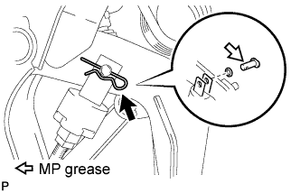
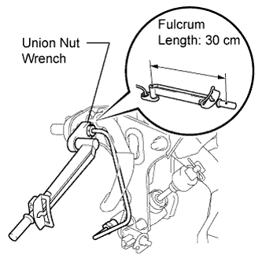
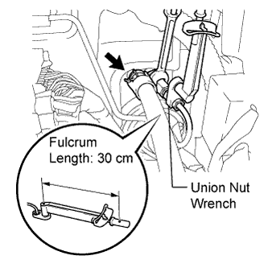
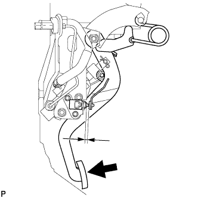

CLUTCH MASTER CYLINDER (for LHD) > INSTALLATION |
| 1. INSTALL CLUTCH MASTER CYLINDER ASSEMBLY |
 |
Install the clutch master cylinder with the 2 bolts.
 |
Apply MP grease to the contact surface of the clevis pin and clevis bush.
Install the wave washer to the clevis pin.
Connect the clevis of the master cylinder to the clutch pedal with the clevis pin.
Install a new clip to the clevis pin.
| 2. INSTALL CLUTCH START SWITCH ASSEMBLY |
 |
Install the clutch start switch to the clutch pedal bracket, and then temporarily install the 2 nuts.
| 3. INSTALL CLUTCH MASTER CYLINDER TO WAY TUBE |
 |
Using a union nut wrench, install the tube to the clutch master cylinder and clutch pedal support way.
| 4. INSTALL CLUTCH RESERVOIR HOSE |
 |
Install the clutch reservoir hose to the clutch master cylinder and clutch pedal support way with 2 new clips.
| 5. INSTALL CLUTCH PEDAL SUPPORT ASSEMBLY WITH CLUTCH MASTER CYLINDER |
 |
Install the clutch pedal support with clutch master cylinder with the bolt and 2 nuts.
Connect the clutch start switch connector.
w/ Cruise Control System:
Connect the clutch switch connector.
| 6. CONNECT CLUTCH MASTER CYLINDER TO FLEXIBLE HOSE TUBE AND CLUTCH RESERVOIR TUBE |
 |
Using a union nut wrench, connect the flexible hose tube.
Connect the clutch reservoir tube with a new clip.
| 7. INSTALL MAIN BODY ECU (COWL SIDE JUNCTION BLOCK LH) |
 |
Connect the 9 ECU connectors.
 |
Install the ECU with the 3 bolts.
| 8. FILL RESERVOIR WITH BRAKE FLUID |
Fill the reservoir with brake fluid.
| 9. BLEED CLUTCH LINE |
 |
Remove the release cylinder bleeder plug cap.
Connect a vinyl tube to the bleeder plug.
Depress the clutch pedal several times, and then loosen the bleeder plug while the pedal is depressed.
When fluid no longer comes out, tighten the bleeder plug, and then release the clutch pedal.
Repeat the previous 2 steps until all the air in the fluid is completely bled.
Tighten the bleeder plug.
Install the bleeder plug cap.
Check that all the air has been bled from the clutch line.
| 10. INSPECT AND ADJUST CLUTCH PEDAL SUB-ASSEMBLY |
 |
Check that the clutch pedal height is correct.
Adjust the clutch pedal height.
Loosen the lock nut and turn the stopper bolt or clutch switch until the height is correct. Tighten the lock nut.
 |
Check that the clutch pedal free play and push rod play are correct.
Depress the clutch pedal until the clutch resistance begins to be felt.
Gently depress the clutch pedal until the resistance begins to increase a little.
Adjust the clutch pedal free play and push rod play.
Loosen the lock nut and turn the clutch push rod until the clutch pedal free play and push rod play are correct.
Tighten the lock nut.
After adjusting the clutch pedal free play and push rod play, check the clutch pedal height.
 |
Check the clutch release point.
Pull the parking brake lever and chock the wheels.
Start the engine and allow it to idle.
Without depressing the clutch pedal, slowly move the shift lever to R until the gears engage.
Gradually depress the clutch pedal and measure the stroke distance from the point that the gear noise stops (release point) up to the full stroke end position.
| 11. ADJUST CLUTCH START SWITCH ASSEMBLY |
 |
While depressing the clutch pedal, tighten the 2 nuts so that the clearance between the clutch pedal and clutch start switch is within the specification.
| 12. CHECK FLUID LEVEL IN RESERVOIR |
Check the fluid level.
If the brake fluid level is low, check for leaks and inspect the disc brake pad. If necessary, refill the reservoir with brake fluid after repair or replacement.
| 13. INSPECT FOR CLUTCH FLUID LEAK |
| 14. INSTALL LOWER INSTRUMENT PANEL SUB-ASSEMBLY (w/o Driver Side Knee Airbag) |
 |
Attach the 4 claws and connect the DLC3.
Install the instrument panel with the 5 bolts.
| 15. INSTALL DRIVER SIDE KNEE AIRBAG ASSEMBLY (w/ Driver Side Knee Airbag) |
 |
Connect the connector.
Install the driver side knee airbag with the 5 bolts.
| 16. INSTALL NO. 1 SWITCH HOLE BASE |
 |
Connect the connectors.
Attach the 4 claws to install the switch hole base.
| 17. INSTALL LOWER NO. 1 INSTRUMENT PANEL FINISH PANEL |
 |
Connect the connectors.
Attach the 2 claws to install the sensor.
 |
Attach the 2 claws to connect the 2 control cables.
 |
Attach the 14 claws to install the finish panel.
Install the 2 bolts.
 |
Attach the 2 claws to close the hole cover.
| 18. INSTALL COWL SIDE TRIM BOARD LH |
 |
Attach the 2 clips to install the trim board.
Install the cap nut.
| 19. INSTALL NO. 1 INSTRUMENT PANEL UNDER COVER SUB-ASSEMBLY (w/ Floor Under Cover) |
 |
Connect the connectors.
Attach the 3 claws to install the under cover.
Install the 2 screws.
| 20. INSTALL FRONT DOOR SCUFF PLATE LH |
 |
Attach the 7 claws and 4 clips to install the scuff plate.
| 21. INSTALL NO. 2 INSTRUMENT CLUSTER FINISH PANEL GARNISH |
 |
Attach the 2 claws to install the panel garnish.
| 22. INSTALL NO. 1 INSTRUMENT CLUSTER FINISH PANEL GARNISH |
 |
Attach the 3 claws to install the panel garnish.
| 23. INSTALL INSTRUMENT SIDE PANEL LH |
 |
Attach the 6 claws to install the side panel.
| 24. INSTALL LOWER INSTRUMENT PANEL PAD SUB-ASSEMBLY LH |
 |
Connect the connectors and 2 clamps.
Attach the 8 claws to install the panel pad.
Install the screw.
Install the clip.
| 25. INSTALL NO. 2 INSTRUMENT PANEL FINISH PANEL CUSHION |
 |
Attach the 7 claws to install the panel cushion.